🔖原文首页（IJSPT 2013 年第 8 卷第 5 期）
📚 文献卡片
▪ 英文原题：The Role of the Scapula（肩胛的作用）
▪ 作者：Russ Paine, PT · Michael L. Voight, PT, DHSc, OCS, SCS, ATC, FAPTA
▪ 机构：IRONMAN 运动医学研究所（休斯敦）· 贝尔蒙特大学（纳什维尔）
▪ 期刊：International Journal of Sports Physical Therapy（IJSPT）
▪ 年卷期：2013;8(5):617-629
▪ PMCID：PMC3811730
▪ 文章类型：特邀临床评论（Invited Clinical Commentary）
▪ 证据级别：原文标注 Level 5（专家意见）
▪ 关键词：scapular musculature · scapular biomechanics · shoulder rehabilitation · scapular strengthening
"In normal upper quarter function, the scapula provides a stable base from which glenohumeral mobility occurs."
"在正常的上肢功能中，肩胛提供一个稳定的基座，盂肱关节的活动在这个基座上进行。"
过去设计肩关节康复方案时，肩胛周围肌群常常被忽略。过去二十年的大量研究让大家逐渐认识到：肩胛稳不住，肩就动不好。
作者指出，肩胛稳定肌无力和由此导致的力学改变，可能带来三个后果：
• 肩关节前方关节囊结构受到异常应力
• 肩袖受挤压（撞击）的可能性增加
• 肩关节复合体的神经肌肉表现下降
这篇文章由 1993 年同名经典文章的作者更新，系统介绍了肩胛的解剖、生物力学、病理力学、评估和三阶段训练方案。
| 主题 | 核心要点 |
|---|---|
| 解剖 | 肩胛胸壁关节没有骨性连接，全靠肌肉“吸附”在胸廓上 |
| 正常力学 | 上举时肩胛上回旋、后倾、外旋；肩肱节律约 2:1 |
| 病理力学 | 前锯肌和下斜方肌最常无力或被抑制；68% 的肩袖问题伴肩胛不稳 |
| 评估 | 负荷下（手持哑铃前屈）最容易暴露肩胛控制不足 |
| 训练 | 先恢复柔韧 → 等长 → 等张 → 闭链和专项训练，分三阶段 |
一句话记住：肩袖起于肩胛，肩胛稳了，肩袖才有力的支点。
"The scapulothoracic articulation is one of the least congruent joints in the body."
"肩胛胸壁关节是全身匹配度最差的关节之一。"
• 肩胛和胸廓之间没有真正的骨性关节，可以前伸、后缩、上提、下沉、前后倾、内外旋、上下回旋
• 肩胛只靠肩锁关节的韧带，以及前锯肌和肩胛下肌形成的“吸附”机制，贴在胸廓上滑动
• 主要稳定肌：前锯肌、大小菱形肌、肩胛提肌、斜方肌
• 盂肱关节的“保护者”：冈上肌、冈下肌、小圆肌、肩胛下肌（肩袖）
四组肩胛肌肉一览：
| 肌肉 | 起止与神经 | 主要作用 |
|---|---|---|
| 前锯肌 | 起于第 1-8 肋，止于肩胛内侧缘前面和下角；胸长神经 | 上举时稳定肩胛，前伸（推、出拳）；参与上回旋、后倾和外旋 |
| 菱形肌 | 小菱形肌起于 C7-T1，大菱形肌起于 T2-T5，止于肩胛内侧缘；肩胛背神经 | 后缩（向脊柱靠拢）；投球随挥期离心收缩“刹车” |
| 斜方肌 | 起于枕骨、项韧带和 C7-T12 棘突，止于锁骨外 1/3、肩峰和肩胛冈；副神经 | 上束：上回旋和上提；中束：后缩；下束：上回旋、下沉，并参与后倾和外旋 |
| 肩胛提肌 | 起于 C1-C4 横突，止于肩胛冈水平的内侧缘；颈丛（C3、C4），常有肩胛背神经参与 | 上提肩胛，下回旋使关节盂向下 |
"The inability to achieve the fully retracted position during the throwing or overhead motion can lead to increased stress on the anterior structures of the shoulder."
"投球或过头动作时如果肩胛不能完全后缩，会增加肩关节前方结构的应力。"
所以前向不稳的患者要重点强化菱形肌。
"Exercises used to strengthen rotator cuff and scapulothoracic musculature are also effective in eliciting activity of the levator scapulae, making specific exercises to target this muscle often unnecessary."
"用于强化肩袖和肩胛胸壁肌群的训练，也能有效激活肩胛提肌，因此通常不需要专门针对它训练。"
"Inman et al found an overall 2:1 relationship between glenohumeral elevation and scapular upward rotation, which has remained the classic description of the so-called scapulohumeral rhythm."
"Inman 等发现盂肱关节上举与肩胛上回旋之间总体呈 2:1 的关系，这至今仍是“肩肱节律”的经典描述。"
• 三维研究显示：肩胛平面上举时，肩胛规律地上回旋、后倾、外旋，同时锁骨上提、后缩
• 上回旋是最主要的肩胛运动
• 肩胛内外旋的变化个体差异大；多数研究认为上举末端有一定外旋，也有研究报告内旋
"In fact, scapular instability is found in as many as 68% of rotator cuff problems and 100% of glenohumeral instability problems."
"事实上，多达 68% 的肩袖问题和 100% 的盂肱关节不稳问题都伴有肩胛不稳。"
肩胛运动障碍指的是肩胛正常运动学的改变。可能的原因：
| 类别 | 举例 |
|---|---|
| 骨性 | 姿势、既往骨折 |
| 关节 | 肩锁关节不稳或关节病、盂肱关节内紊乱 |
| 神经 | 颈神经根病、神经麻痹 |
| 软组织 | 柔韧性不足（紧张）、肌肉本身的问题、肩胛周围肌肉激活改变 |
"The serratus anterior and lower trapezius are the most commonly weak or inhibited muscles of the scapulothoracic joint that may lead to abnormal movement."
"前锯肌和下斜方肌是肩胛胸壁关节最常出现无力或被抑制的肌肉，可能导致异常运动。"
这两块肌肉组成上回旋力偶，负责抬起肩峰。比如前锯肌瘫痪时，肩胛内侧缘离开胸廓，肩峰抬不起来，结果是肩外展减少、继发撞击。
疲劳的影响：疲劳后肩胛在功能活动中更容易向外滑（外滑试验距离增加），肩关节运动觉也明显下降，可能干扰正常协调和关节稳定。
"Scapular dyskinesis is generally characterized by a lack of upward rotation, a lack of posterior tilting and increased internal or medial rotation of the scapula."
"肩胛运动障碍的一般特征是：上回旋不足、后倾不足，以及肩胛内旋增加。"
• 难点：肩胛位置深、表面肌肉多，而且肩胛是三维运动，大多数方法只看一个平面
• 不对称不一定是病：无症状的棒球投手也常有单侧不对称
• Kibler 肩胛运动障碍试验：手法重新摆正肩胛，看疼痛弧是否减轻或消失。观察者间信度中等偏低（物理治疗师 0.42、医生 0.32）；简化成“有 / 无”后信度提高
• McClure 和 Tate：按正常、轻微、明显分级，观察者间信度 0.57
"It appears that loading the shoulder by performing a forward flexion lift with a dumbbell seems to be the best position to reveal any lack of scapular control."
"让肩关节负重，比如手持哑铃前屈，似乎是暴露肩胛控制不足的最佳方式。"
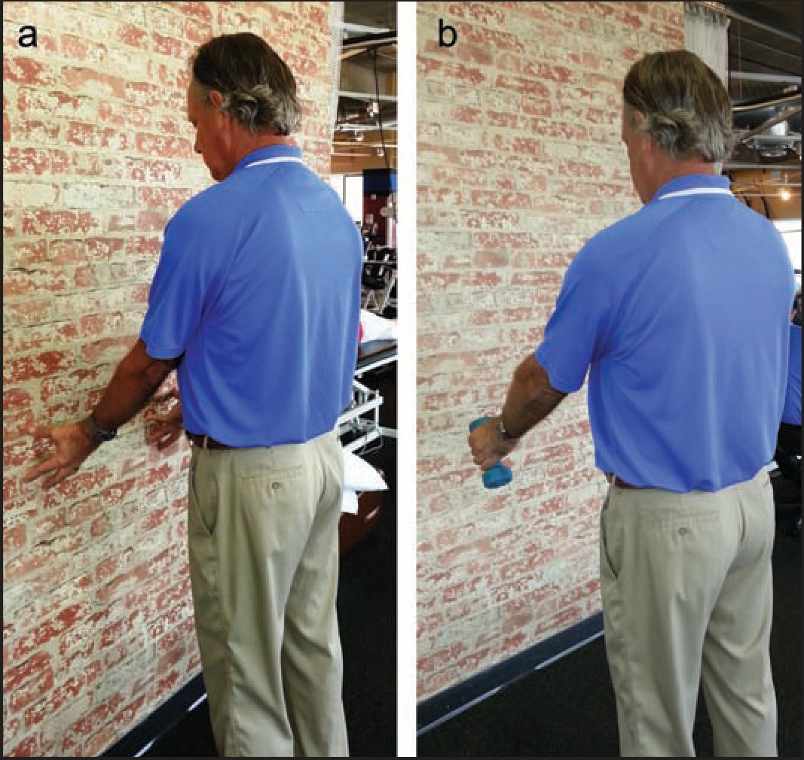
🔖图1：（a）推墙：用指尖压墙，身体不要靠向墙面，观察肩胛有无向后翘起（翼状）；（b）手持 3-5 磅（约 1.4-2.3 kg）哑铃前屈后放到 45°，观察肩胛有无翼状
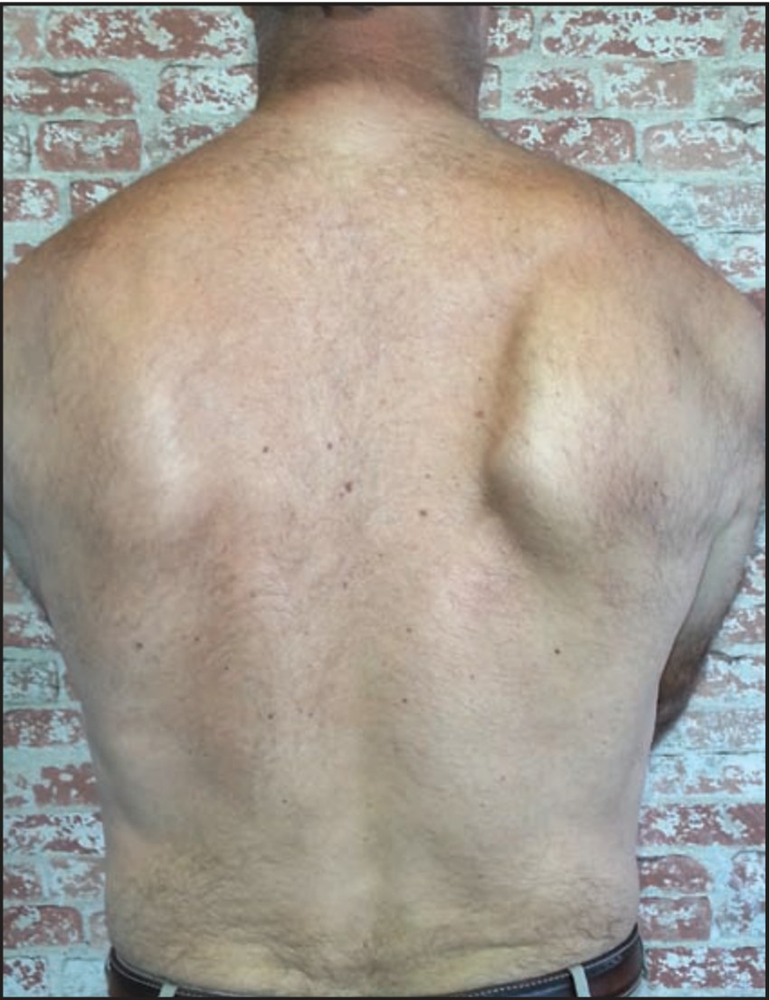
🔖图2：仅用指尖压墙时，右侧肩胛内侧缘明显突出
作者也承认，目前还没有可靠的肩胛检查方法。作为对比，膝关节 KT-1000 测量前交叉韧带松弛，检查者间的组内相关系数可达 0.92。
• 后侧肩紧张被认为是肩胛前倾的原因之一：内旋减少与肩胛前倾相关
• 棒球运动员的后侧肩紧张与肩胛前伸姿势中度相关
• 投手比野手的肩胛更下回旋，可能与关节囊松弛、张力不足有关
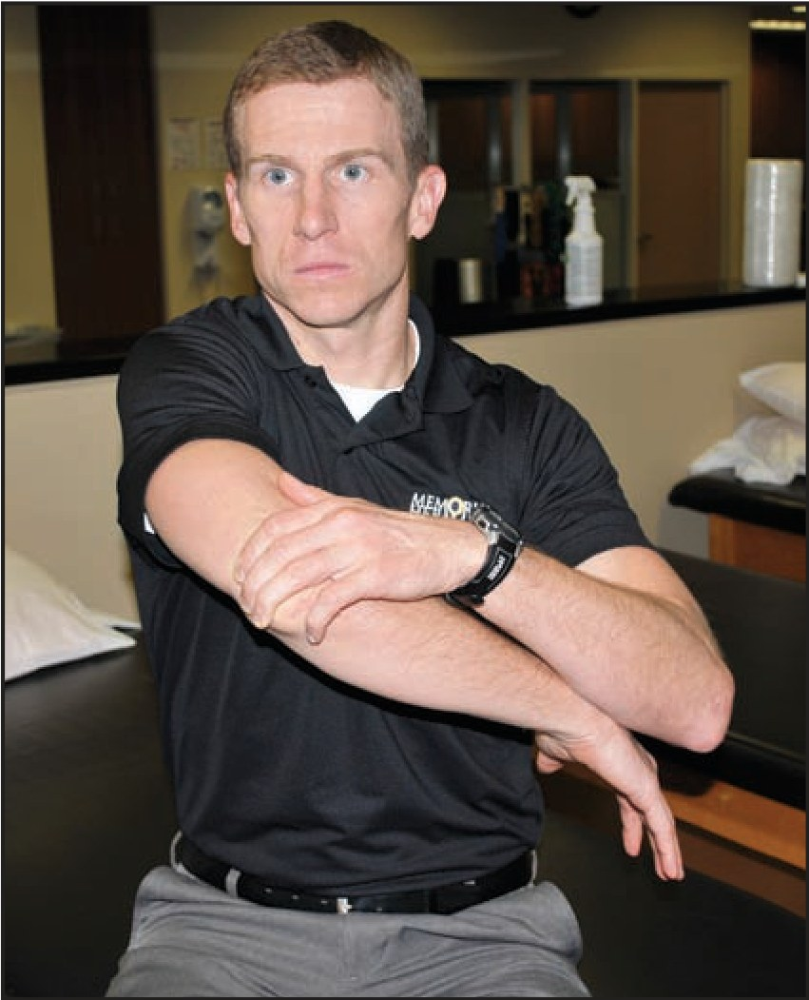
🔖图3：“精灵”拉伸：从“精灵姿势”开始，患侧手臂在下；用上方手臂控制外旋，抬肘后沿对角线拉过胸前。应感到肩上方或后方被拉伸；如果前方有夹挤感，说明出现喙突撞击，可把角度降低、朝向对侧髋部
这个拉伸由 Paine 提出，控制住外旋，让紧张的后侧肩袖和关节囊处于拉伸状态，比不控制外旋的水平内收拉伸更有针对性。Wilk 还介绍了侧卧版：患侧卧位，压住肩胛做同样的动作，减少肩胛移动。
"Before beginning a corrective strengthening program, the clinician must regain normal flexibility of the muscles about the scapula if identified, as tightness or adaptive shortening can inhibit activation of opposing muscle groups."
"在开始纠正性力量训练之前，如果发现肩胛周围肌肉紧张，必须先恢复正常柔韧性，因为紧张或适应性缩短会抑制拮抗肌群的激活。"
肩胛运动障碍的患者常见胸小肌和后关节囊紧张，胸小肌短的人肩胛内旋和前倾更多，所以早期就可以用手法和拉伸处理。之后的顺序是：有意识的运动控制 → 动态控制 → 专项动作中的力量。
等长训练（适合术后患者或主动上举明显疼痛者）：
• 肩胛夹紧：两侧肩胛骨向中间夹紧，保持 3 秒
• “举手投降”夹紧：在图 6 的姿势下夹紧肩胛，保持 3 秒
• 低位划船靠墙等长：背靠墙，手臂垂在体侧伸直，指尖向后压墙，保持 3 秒
等张训练（疼痛弧减轻后开始）：轻阻力、重视动作质量，作者建议 3 组 × 10-20 次，每次保持 3 秒。
• 弹力带肩胛夹紧：身前拉开弹力带，同时夹紧肩胛，全程肘贴体侧
• 弹力带低位划船：双臂垂在体侧向后伸，夹紧下方肩胛肌群
• 动态拥抱：弹力带绕过背后，双手在身前做拥抱动作，使肩胛前伸
• 肩胛出拳：背对门，弹力带固定在约肩高处，做出拳动作，确保肩胛充分前伸
• 啦啦队训练：双手拉一根弹力带，伸肘做双侧水平外展，再交替做左右 D2 对角线
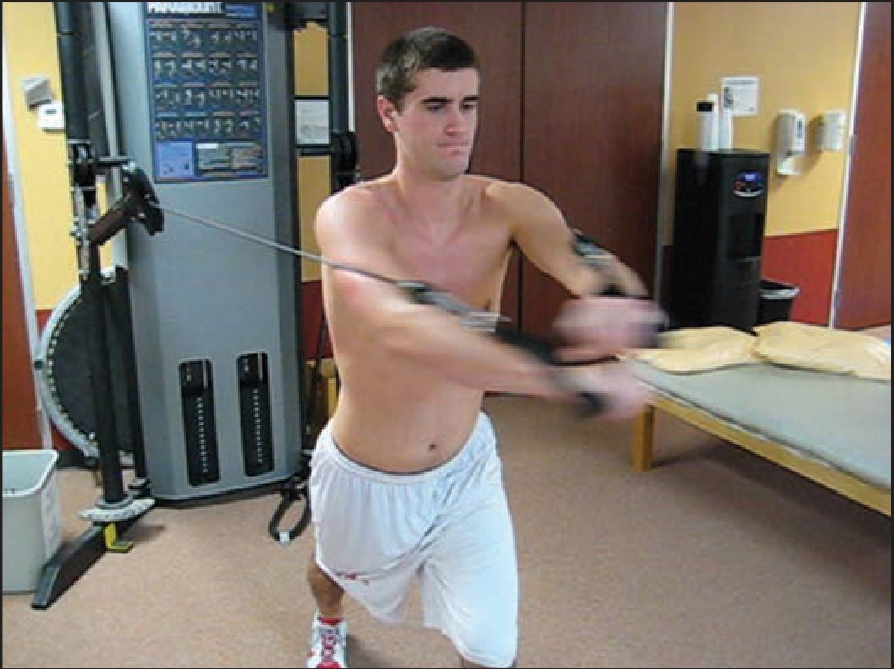
🔖图4：动态拥抱：用拉力器（也可用弹力带）向前做“抱树”动作。目标肌肉：前锯肌
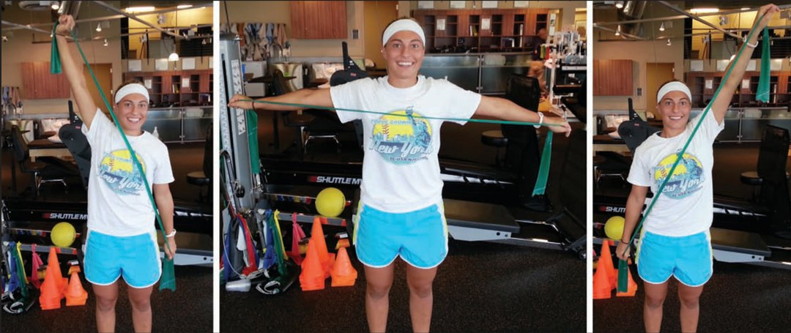
🔖图5：啦啦队训练：用弹力带交替做对角线动作，每次对角线之间做一次双侧水平外展。目标肌肉：下斜方肌、菱形肌
过头上举时基本不痛后开始；不痛的话，部分动作可以更早做。
• 坐姿划船：拉向胸骨、夹紧肩胛，再伸直手臂让肩胛完全前伸；全程肘贴体侧，也可单侧做
• 高位划船：拉力器调高，向下拉到胸前
• 瑞士球“举手投降”：俯卧球上，双手抓地上的哑铃，后缩肩胛做出“举手投降”姿势，同时保持脊柱伸展
• 站姿 D2 挥臂拉力器：从对侧小腿高度沿对角线向上拉到“自由女神像”姿势，再有控制地放回
• 高位下拉：杆在身前拉到胸前，练下方肩胛肌群（下回旋肌）
• 徒手抗阻：侧卧位，治疗师对前伸 / 后缩、上提 / 下沉、上回旋 / 下回旋和 PNF 对角线施加阻力
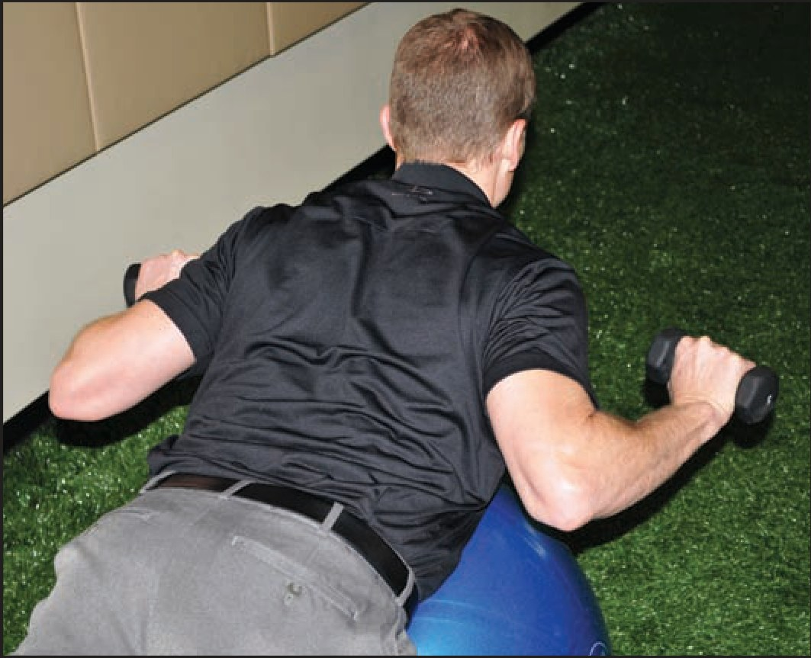
🔖图6：瑞士球“举手投降”：俯卧球上，做“举手投降”姿势，提示患者“肘尖指向后裤兜”。目标肌肉：下斜方肌
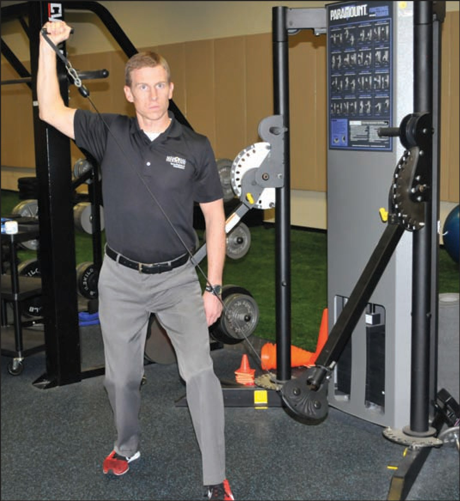
🔖图7：挥臂拉力器：做 D2 对角线拉到挥臂准备位，再慢慢放下练减速。目标肌肉：下斜方肌、菱形肌、后侧肩袖
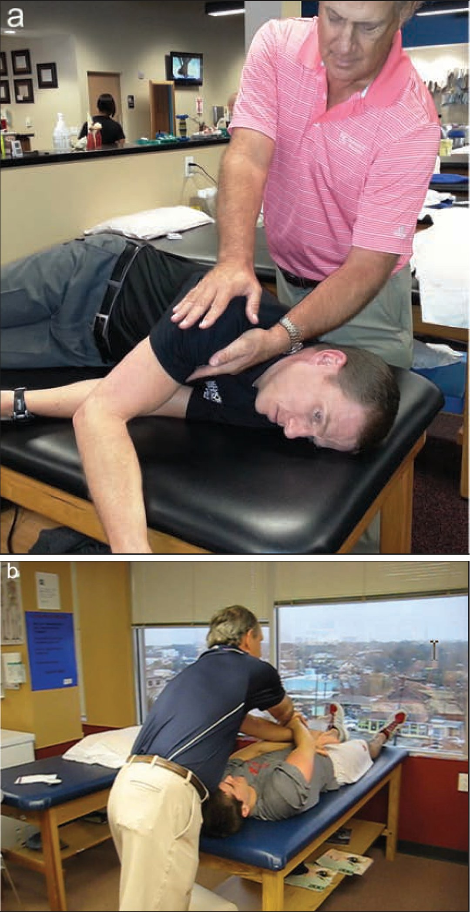
🔖图8：（a）徒手抗阻前伸 / 后缩：在肩前方和肩胛冈施加阻力，目标肌肉为前锯肌和菱形肌；（b）双侧 PNF：徒手抗阻双侧 D2 模式，目标肌肉为下斜方肌、菱形肌和后侧肩袖
这一阶段是进阶训练，并非每个人都需要，包含闭链和更激进的专项动作。
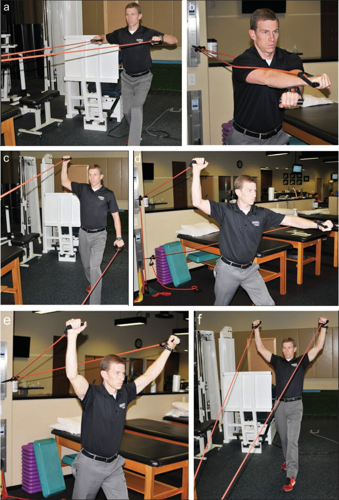
🔖图9：“Super 6”肩胛训练组合：a 直立划船；b 动态拥抱；c 挥臂 / 减速；d 挥臂 / 加速；e 双侧 D2；f 双侧上拉。是一组双臂交替进行、同时训练肩胛、肩袖和躯干的动作
• 站姿拉力器出拳：长杆连拉力器，做带肩胛前伸的出拳
• 瑞士球爬行：双腿放在球上、躯干伸直、脊柱中立，用手向前走出去做俯卧撑，再爬回来
• 增强式减速：跪姿，治疗师从后方抛 2 磅（约 0.9 kg）小球，患者接球并减速到内旋位
• 坐姿撑起：双手撑在两个箱子上或握住大哑铃，把臀部撑离床面，目标保持 20 秒
• 站姿“雪天使”：背靠墙做过头推举，双手在头顶相碰，手背、前臂和肩胛始终贴墙，可加轻的腕部沙袋
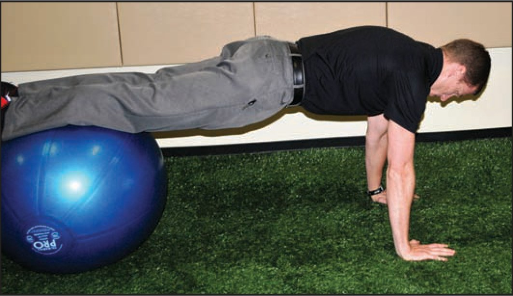
🔖图10：瑞士球爬行：双腿在球上呈平板姿势，用手向前走出去，再做俯卧撑 plus。目标肌肉：前锯肌、胸大肌
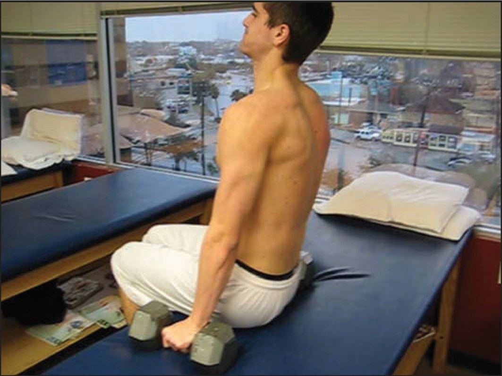
🔖图11：坐姿撑起：用大哑铃或箱子把臀部撑离床面，保持 20 秒。目标肌肉：下斜方肌
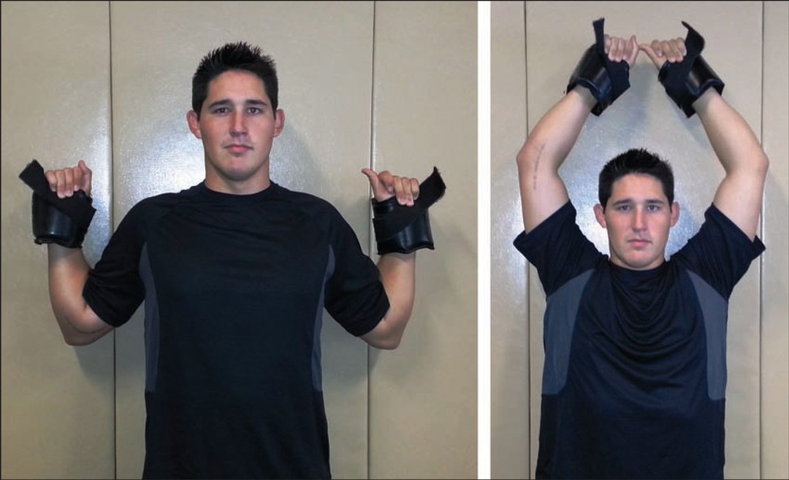
🔖图12：站姿“雪天使”：背靠墙，肩胛、手背和前臂贴墙，双手做过头推举再放回体侧，可用轻的腕部沙袋增加阻力
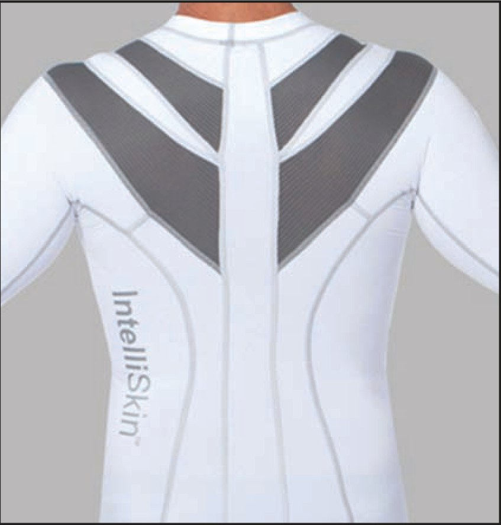
🔖图13：肩胛矫姿衣：帮助保持正确姿势和肩胛位置
为了让患者在活动中更好地感知肩胛位置，有厂商做了紧身的“肩胛衣”，通过特殊的缝制方式促进挺胸、肩胛后缩和上回旋。也有治疗师用肌贴给肩胛肌群提供本体感觉反馈。作者更偏好肩胛矫姿衣。
▪️值得肯定的部分：
• 从解剖、力学到训练方案，系统梳理了肩胛的作用，适合作为入门总览
• 训练方案按阶段推进，每个动作都标注了目标肌肉，基于既往肌电研究设计
• 坦率承认肩胛检查的信度问题，并给出了临床可用的负荷下观察方法
• 13 张动作图覆盖了检查、拉伸和三阶段训练
▪️需要谨慎看待的部分：
• 证据级别为 Level 5：训练方案来自作者经验，没有疗效数据
• 除第一阶段等张训练给了“3 组 × 10-20 次”外，其他动作大多没有剂量和进阶标准
• 原文有几处笔误：前锯肌的神经写成“第 5 和第 7 脑神经”，实际胸长神经来自 C5-C7 颈神经根；坐姿撑起标注为“图 8”，实际是图 11；“Launder”应为 Laudner
• “精灵”拉伸比其他后侧拉伸更有效，是作者的推断，文中没有对照研究
• 肩胛矫姿衣和肌贴的效果，文中没有给出证据
空手上举可能看不出问题。让患者指尖推墙，或手持 3-5 磅哑铃前屈后放下到 45°，肩胛控制不足更容易暴露出来。
胸小肌和后关节囊紧张会抑制拮抗肌。先用手法、拉伸（如“精灵”拉伸）恢复柔韧，再开始肩胛力量训练。
这两块肌肉最常无力，又负责上回旋力偶。动态拥抱、出拳、瑞士球爬行练前锯肌；“举手投降”、啦啦队训练、坐姿撑起练下斜方肌。
肩胛后缩不到位，肩前方压力就会增加。前向不稳和投掷运动员，要专门强化菱形肌的后缩和离心“刹车”能力。
术后或疼痛明显时，先做肩胛夹紧、靠墙低位划船这类等长训练，不需要等到肩能抬起来。
"Scapular strengthening should be a part of all rehabilitation programs relating to the shoulder complex."
"肩胛力量训练应该成为所有肩关节复合体康复方案的一部分。"
① 解剖：没有骨性连接，全靠肌肉稳定
② 力学：上举时上回旋、后倾、外旋，肩肱节律约 2:1
③ 病理：前锯肌、下斜方肌最常无力；肩袖和不稳问题常伴肩胛不稳
④ 评估：负荷下观察，同时查后侧肩和胸小肌
⑤ 训练：柔韧 → 等长 → 等张 → 闭链和专项
⑥ 辅助：肩胛矫姿衣或肌贴提供姿势反馈
欢迎关注骨科康复小黄公众号，获取更多物理治疗的专业知识！
📄参考文献：
Paine R, Voight ML. The Role of the Scapula. Int J Sports Phys Ther. 2013;8(5):617-629. PMCID: PMC3811730.
文中图片均来自原文，仅用于学术交流。